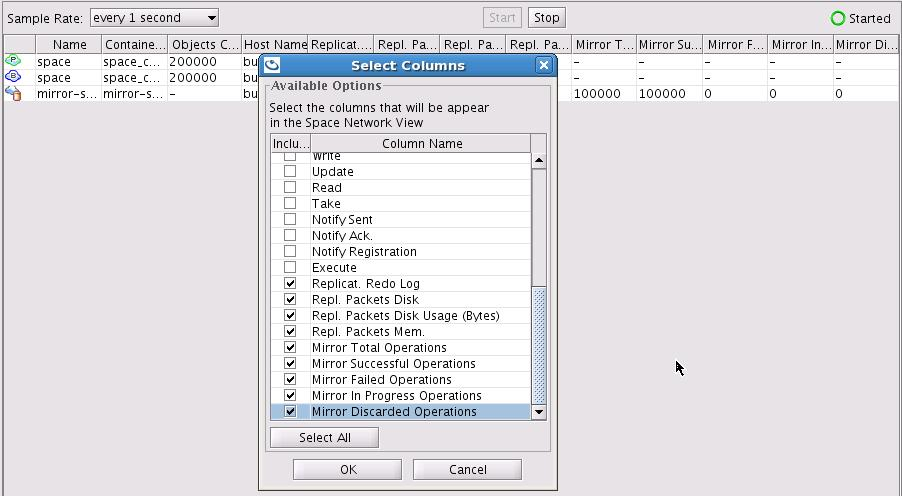

The
The mirror service ensures that data will not be lost in the event of a failure. This allows you to add persistency to your application just by running the mirror service, without changing the real-time component of your application in either configuration or code. This service provides fine-grained control of which object needs to be persisted.
The mirror does require a backup since it does not hold any state. The actual state of the latest committed database transaction is stored within the primary and the backup space instances, not in the mirror.
Essentially, the mirror acts as a dispatcher and pushes the changes done to the space (all primary partitions) into the database (or any other data source), in an asynchronous and reliable manner. In case of a failure of the mirror, it will be restarted automatically and the primary instances will play back the un-committed transactions that occurred while the mirror was down.
The mirror PU (like any deployed service) is mobile. It can run on any machine running a GSC, so the GSM will pick one of the existing GSCs to provision the missing mirror PU.
If for some reason the SLA you applied forces the mirror PU to run on a specific machine that is unavailable (for example on a specific zone which does not have any running containers), the primary and backup will hold the transaction data within their redo log queue in memory. At some point they will store it in a file until the mirror machine is restarted.
You should not deploy the mirror in clustered mode nor have multiple instances of it. It should have a single instance as part of its SLA configuration.
Enabling the mirror service involves the following:
The above share the same Space Persistency settings but have different space settings. See NHibernate Space Persistency for details about how to use the built-in HibernateExternalDataSource.
The cluster-config.mirror-servicespace settings specify the interaction between the data grid primary spaces and the mirror service.
The mirror="true"space element tag enables the replication mechanism from the data grid primary spaces to the mirror service. Once mirror="true" is specified, all data grid members will be mirror-aware and will delegate their activities to the mirror service.
The data grid primary instance will replicate the operations that have been logged within the primary redo log every interval-millis amount of time or interval-opers number of operations. Both of these mechanisms are always active and the first one that is reached triggers the replication event.
If you are not using mirror="true" with the data grid PU, you should use the following property instead:
cluster-config.mirror-service.enabled=true
The data grid mirror replication settings include the following options:
| Property | Description | Default |
|---|---|---|
| cluster-config.mirror-service.url | Used to locate the mirror service. If you change the name of the mirror service specified as part of the mirror PU, you should modify this parameter value to facilitate the correct mirror service URL. | jini://*/mirror-service_container/mirror-service |
| cluster-config.mirror-service.bulk-size | The number of operations to be transmitted in bulk (in quantity and not actual memory size) from an active data grid primary to the mirror service. | 100 |
| cluster-config.mirror-service.interval-millis | The replication frequency - replication will happen every interval-millis milliseconds. |
2000 |
| cluster-config.mirror-service.interval-opers | The replication buffer size - replication will happen every interval-opers operations. |
100 |
| cluster-config.groups.group.repl-policy.repl-original-state | The replication reconciliation mode - this setting should be enabled to ensure that write/take operations or multiple updates for the same space object will be sent to the mirror, and will not be discarded when sent within the same batch. | true |
| cluster-config.mirror-service.on-redo-log-capacity-exceeded | Available options: block-operations - all cluster operations that need to be replicated (write/update/take) are blocked until the size of the redo log decreases below the capacity. Note that users get RedoLogCapacityExceededException exceptions while trying to execute these operations. drop-oldest - the oldest packet in the redo log is dropped. See Controlling the Replication Redo Log for details. |
block-operations |
| cluster-config.mirror-service.redo-log-capacity | Specifies the total capacity of replication packets the redo log can hold for a mirror service replication target. See Controlling the Replication Redo Log for details. |
1000000 |
| cluster-config.groups.group.repl-policy.async-replication.async-channel-shutdown-timeout | Determines how long (in ms) the primary space will wait before replicating all existing redo log data into its targets before shutting down. | 300000 ms |
The mirror service may receive replication events from multiple active primary partitions. Each active partition sends its operations to the mirror service via a dedicated replication channel. The mirror handles incoming replication requests simultaneously. Each Primary Space sends its operations to the mirror service in the same order the operations were executed, allowing the mirror to preserve the consistency of the data within the data source.
The data grid Space settings appear as follows:
<ProcessingUnit>
<EmbeddedSpaces>
<add Name="space" mirrored="true">
<ExternalDataSource Type="GigaSpaces.Practices.ExternalDataSource.NHibernate.NHibernateExternalDataSource"
Usage="ReadOnly">
<!-- NHibernate-specific config goes here -->
</ExternalDataSource>
<Properties>
<!-- Use ALL IN CACHE - No Read Performed from the database in lazy manner-->
<add Name="space-config.engine.cache_policy" Value="1"/>
<add Name="cluster-config.cache-loader.external-data-source" Value="true"/>
<add Name="cluster-config.cache-loader.central-data-source" Value="true"/>
<add Name="cluster-config.mirror-service.url" Value="jini://*/mirror-service_container/mirror-service"/>
<add Name="cluster-config.mirror-service.bulk-size" Value="100"/>
<add Name="cluster-config.mirror-service.interval-millis" Value="2000"/>
<add Name="cluster-config.mirror-service.interval-opers" Value="100"/>
<add Name="cluster-config.groups.group.repl-policy.repl-original-state" Value="true"/>
</Properties>
</add>
</EmbeddedSpaces>
</ProcessingUnit>
The above example:
mirror-service.See Space Persistency Properties and NHibernate Space Persistency for full details about the EDS properties that you may configure.
You must use a data grid cluster schema that includes a backup (i.e. partitioned) when running a mirror service. Without having a backup, the Primary data grid Spaces will not replicate their activities to the mirror service. For testing purposes, if you don't wish to start backup spaces, you can use the partitioned cluster schema and have 0 (zero) as the number of backups - this will still allow the primary spaces to replicate their operations to the mirror.
If you wish to change the mirror service name, please refer to Async Persistency - mirror - advanced.
Enabling replication to the mirror without starting the mirror will generate a backlog within the primary space (and backup). Please avoid running in this configuration.
The mirror service is constructed using the mirrors tag. The mirror service itself is not a regular Space. It dispatches the operations which have been replicated from the IMDG primary spaces to the data source (i.e. database). The mirror service should be constructed as a separate processing unit, which includes only its definition.
The mirror settings includes the following options:
| Property | Description | Default |
|---|---|---|
| OperationGrouping | Options: group-by-space-transaction - mirror delegating each transaction separately to the data source (database). group-by-replication-bulk - mirror delegating all replicated items as one bulk to the data source (database). |
group-by-replication-bulk |
| SourceSpace Name | The name of source space (cluster) this mirror serves | NONE, must be supplied |
| SourceSpace Partitions | The number of partitions in source space (cluster) this mirror serves | NONE, must be supplied |
| SourceSpace Backups | The number of backups per partition in source space (cluster) this mirror serves The number of backups per partition is zero or one. |
NONE, must be supplied |
The following shows how to configure a processing unit to act as the mirror service:
<ProcessingUnit>
<mirrors>
<add Name="mirror-service" OperationGrouping="group-by-replication-bulk">
<SourceSpace Name="mySpace" Partitions="2" Backups="1"/>The number of backups per partition is zero or one.
<ExternalDataSource Type="GigaSpaces.Practices.ExternalDataSource.NHibernate.NHibernateExternalDataSource">
<!-- NHibernate-specific config goes here -->
</ExternalDataSource>
</add>
</mirrors>
</ProcessingUnit>
mirror-service is the default name for a mirror Space, which is then used by the data grid to connect to its mirror.pu.config file.When a cluster is undeployed, the mirror service must be undeployed last. This will ensure that all data is persisted properly through mirror async persistency. Before a primary space is undeployed/redeployed, all data changes are flushed to the mirror. This operation is limited by a timeout that can be configured using the following property:
<!-- default value is 5 minutes -->
<add Name="cluster-config.groups.group.repl-policy.async-replication.async-channel-shutdown-timeout" Value="300000"/>
The database update rate by the mirror is a function of the number of IMDG partitions, database update speed with a single thread, database transaction size, network latency between the mirror and the database, Hibernate overhead (if Hibernate is being used as the persistence mechanism), relevant table indexed columns, and the database record size.
When distributed transactions are used with the data grid, this may improve the database update rate (since multiple partitions will be sending their updates to the mirror, which can batch all cumulative updates to the database), but this will impact the data grid transaction latency.
You might wish to tune the data grid and the mirror activity to push data to the database faster. Here are some recommendations to consider:
bulk-size, interval-millis and interval-opers to perform the replication in larger batches and less frequently. This means you should increase these parameters to larger values than the defaults. The exact values vary with the network speed, the average size of the objects, and the database configuration and machine speed. <add Name="cluster-config.mirror-service.bulk-size" Value="10000"/>
<add Name="cluster-config.mirror-service.interval-millis" Value="5000"/>
<add Name="cluster-config.mirror-service.interval-opers" Value="50000"/>
With the above configuration, the primary partition will replicate its redo log activities to the mirror service every 5 seconds or every 50,000 operations. The replication will occur in batches of 10,000 objects per batch.
<add Name="cluster-config.mirror-service.supports-partial-update" Value="true"/>
The activity of the mirror service can be monitored using the Administration and Monitoring API. This API exposes statistics on operations that were executed by the mirror, and can be used to monitor the mirror throughput and health status.
You can view the mirror and its replication statistics via the GigaSpaces Management Center. Select the Space Browser tab, click the top tree Spaces icon, right-click the table columns title area on the right panel, select the columns you would to view as part of the table, and click OK.

See the Mirror Monitor JMX Utility for graphical mirror service monitoring via JMX.